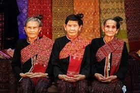

วิถีชีวิต : ชนเผ่าไทแสก

แสก หมายความว่า แจ้ง สว่าง เป็นชนชาติหนึ่งในตระกูลมอญ - เขมร ชาวไทแสก เป็นชนกลุ่มน้อยตั้งถิ่นฐานอาศัยอยู่ในภาคตะวันออกเฉียงเหนือของประเทศไทย
ในท้องที่จังหวัดนครพนมและจังหวัดมุกดาหาร ชาวไทแสกเป็นกลุ่มชาติพันธุ์ ที่เป็นชาติพันธุ์เดิมมีภูมิลำเนาอาศัยอยู่ในตอนกลางของสาธารณะรัฐสังคมนิยมเวียดนาม อาศัยอยู่ในแถบเมืองรอง
เมืองเว้ ต่อมาชาวเวียดนาม พยายามเข้าครอบครองและรุกรานชาวไทแสกตลอดมา จนทำให้ชาวไทแสก ตกอยู่ภายใต้การปกครองของเวียดนาม มีชาวไทแสกบางกลุ่มไม่พอใจอยู่ภายใต้การปกครองของ
เวียดนาม ได้อพยพมาทางตอนใต้ มาทางตอนกลางของประเทศ มาตั้งภูมิลำเนาอยู่ใกล้เมืองท่าแขก (อยู่ตรงข้ามกับจังหวัดนครพนม ประเทศไทย) มาอยู่ที่บ้านหม้อเตลิง บ้านทอก ท่าแค บ้านโพธิ์ค้ำ
ชาวไทแสกที่อพยพจากเมืองแสก อพยพมาตั้งอยู่ที่บ้านโคกยาว (ปัจจุบันคือบ้านไผ่ล้อม ตำบลอาจสามารถ อำเภอเมืองนครพนม จังหวัดนครพนม) สมัยก่อนมีอาณาเขตอยู่ใกล้เคียงกับบ้านนาลาดควาย
(ปัจจุบันบ้านนาราชควาย) จำนวนชาวไทแสกที่ย้ายมาในขณะนั้นมีจำนวน 1,170 คน ต่อมาชาวไทแสกได้ย้ายถิ่นฐานจากบ้านโคกยาวมาอยู่ที่บ้าน "ป่าหายโศก" (ปัจจุบันคือบ้านอาจสามารถ) พระสุนทร ราชวงษา (ฝ้าย) ได้พิจารณาเห็นง่า
ชาวไทแสก มีความสามารถ มีความสามัคคี มีความเข้มแข็ง สามารถปกครองตนเองได้ จึงยกฐานะชาวไทแสกที่อยู่ที่ "ป่าหายโศก" ให้เป็นกองอาทมาตคอยลาดตระเวนชายแดน
ปัจจุบันชาวไทแสกส่วนมากจะอยู่ที่หมู่บ้านอาจสามารถ ตำบลอาสามารถ อำเภอเมือง จังหวัดนครพนมอยู่ห่างจากตัวเมืองจังหวัดนครพนม 4 กิโลเมตร และยังมีชนไทแสกบางกลุ่ม ที่ได้พากันอพยพ โยกย้ายที่อยู่ไปทำมาหากินถิ่นต่างๆ ในจังหวัดนครพนม และรวมทั้งสาธารณะรัฐประชาธิปไตยประชาชนลาว มีชนชาวไทแสกตามถิ่นต่าง ดังนี้
บ้านอาจสามารถ ตำบลอาจสามารถ อำเภอเมือง จังหวัดนครพนม
บ้านไผ่ล้อม ตำบลอาจสามรถ อำเภอเมือง จังหวัดนครพนม
บ้านบะหว้า ตำบลบะหว้า อำเภอศรีสงคราม จังหวัดนครพนม
บ้านดอนเสมอ ตำบลอาจสามารถ อำเภอศรีสงคราม จังหวัดนครพนม
บ้านโพธิ์ค้ำ แขวงคำม่วน เมืองท่าแขก ประเทศลาว
พิธีบวงสรวง "โองมู้" โดยการแสดง "แสกเต้นสาก" ในสมัยก่อนการเต้นสากชองชาวแสก ถือว่าเป็นการละเล่นประจำเฉพาะพิธีบวงสรวง
"โองมู้" ในวันขึ้น 2 ค่ำ เดือน 3 ซึ่งตรงกับเดือนกุมภาพันธ์ ชาวแสก เรียกว่า "พิธี-กิน-เตด-เดน" จะมีการแสดง "แสกเต้นสากถวายโองมู้"
โดยใช้ไม้สากตีกระทบกันเป็นจังหวะ สากที่ใช้ตีในการเต้นสากก็คือไม้สากที่เป็นสากตำข้าวในใสมัยโบราณ แต่ขนาด ยาวกว่าตรงกลางเรียวเล็ก
ไม้รองพื้นสากจะใช้ไม้อะไรรองก่อนก็ได้มีจำนวน 1 คู่ ขอให้มีขนาดเท่ากัน
อุปกรณ์ในการเต้นสาก
ไม้สาก มีลักษณะตรงยาวประมาณ 2 เมตร ใช้เคาะจังหวะประมาณ 5-6 คู่ การวางไม้ สากจะจัดเป็นช่วง ๆ ห่างกันประมาณ 50 เซนติเมตร ต่อ 1 คู่
ไม้รองพื้นสาก มีขนาดใหญ่และยาวกว่าไม้สากมี 1 คู่ ขนาดกว้างยาวเท่ากันยาวประมาณ 5-7 เมตร สำหรับเป็นฐานรองไม้สาก
จังหวะการตีสาก
สมัยโบราณในการเคาะจังหวะจะใช้ไม้สากตำข้าวไม่มีการเตรียมจับไม้สากมา เคาะเป็นจังหวะได้เลยปัจจุบันจังหวะการตีสาก จะมีหลายจังหวะด้วยกัน
หากคนตีสากไม่เป็นและเต้นสากไม่เป็น หรือ เต้นไม่ถูกจังหวะ ไม่สากก็จะตีกระทบขาคนที่เต้น ให้เกิดการเจ็บปวดได้ จะไม่เหมือนกับ รำลาวกระทบไม้
เพราะต้องฝึกและต้องใช้เวลานานพอสมควรซึ่งยากนักจะมีคนตีและเต้นได้เหมือน ชาวแสก เพราะจังหวะเร็วก็เร็วมาก ถ้าไม่ฝึกจนชำนาญ จะไม่สามารถเต้นได้
มิใช่ว่าจะมนไปแสดงได้ตลอดไปก่อนที่จะนำไปแสดงที่อื่น จะต้องทำพิธีขออนุญาต "โองมู้" อนุญาตแล้วจึงนำไปแสดงเต้นสากไปแสดงโดยไม่ได้ขออนุญาตก็จะมีเหตุให้มีอันเป็นไป เช่น ทำให้เจ็บไข้ไม่สบายโดยหาสาเหตุไม่ได้
ดนตรีที่ใช้ประกอบจังหวะ
ส่วนมากเป็นดนตรี พื้นบ้าน มีกลองใหญ่ กลองเล็ก ฆ้องเล็ก พังฮาด (มีลักษณะคล้ายฆ้องตรงกลางจะนูนเป็นวงกลม) ฉิ่ง ฉาบผู้ให้จังหวะส่วนมากจะเป็นผู้ชาย
ผู้แสดง "แสกเต้นสาก"
ผู้ทำหน้าที่เคาะไม้สาก จะนั่งตรงข้าม จับคู่กันประมาณ 5 ถึง 7 คู่ แล้วแต่ความยาวของไม้รองไม้สากจะเป็นผู้หญิงหรือผู้ชายก็ได้
ผู้เต้น จะทำท่าเต้นคล้าย ๆ ระลาวกระทบไม้แต่จังหวะการเต้นจะเร็วกว่ามาก จะมีทั้งเต้นเดี่ยว เต้นเป็นคู่ มีจังหวะช้า จังหวะเร็ว ผู้เต้นจะมีทั้งชายและหญิง
ผู้ร้องเนื้อเพลงภาษาแล้ว ประกอบดนตรีจะเป็นผู้หญิงหรือชายก็ได้
เครื่องแต่งกายในการแสดงสาก
ผู้ชายเสื้อดำแขนสั้น ผ้ายอมหม้อสีคราม เสื้อคอกลมติดกระดุมด้านหน้ากางเกงขาก๊วย หรือขาครึ่งท่อ ผ้าคาดเอว เป็นผ้าขาวม้า เป็นลายตะล่องสีแดงส่วนผ้าพาดบ่า ใช้ผ้าสีแดงล้วน
ผู้หญิงเสื้อแขนยาวสีดำ ผ่าอก ติดกระดุมด้านหน้า ผ้าถุงสีดำมีเชิงที่ปลายผ้าถุง ผ้าถุงยาวกรอมเท้า ผ้าคาดเอวนิยมเป็นผ้าลายเดี่ยวกันกับลายเชิงผ้าถุงผ้าเบี่ยงซ้าย นิยมใช้ผ้าสีแดง นิยมใส่ตุ้มหู กำไลขา และสร้อยขา และสร้อยคอผมนิยมไว้ผมยาวเกล้ารัดมวย